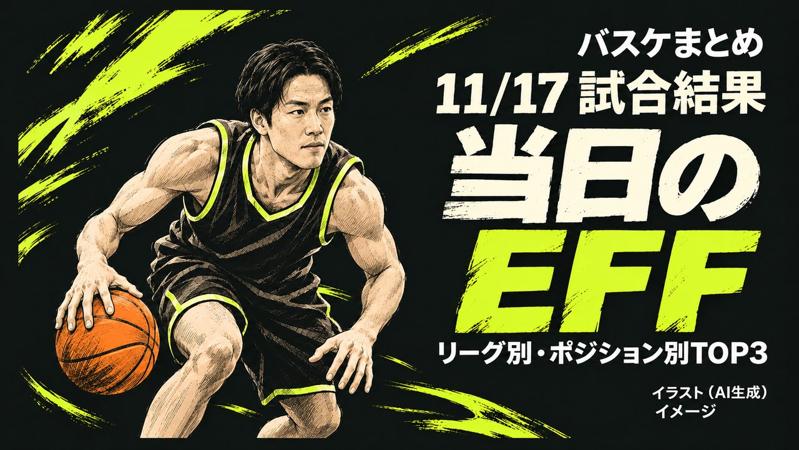

11/17 試合結果・当日のEFF

試合結果
B.PREMIER
B.ONE
この日試合なし：B.NEXT
試合結果 ／ 当日の EFF
当日のEFF・ポジション別TOP3
実際に出場した選手・公式試合スタッツ
B.PREMIER
PG
| 位 | 選手・所属 | 得点 | REB | AST | EFF |
|---|---|---|---|---|---|
| 1 | 長野 誠史三河・PG | 9 | 0 | 2 | 6 |
| 2 | 平良 彰吾三河・PG | 0 | 1 | 3 | 4 |
| 3 | 熊谷 航長崎・PG | 2 | 1 | 4 | 1 |
SG
| 位 | 選手・所属 | 得点 | REB | AST | EFF |
|---|---|---|---|---|---|
| 1 | 馬場 雄大長崎・SG/SF | 16 | 6 | 4 | 20 |
| 2 | リーヴァイ・ランドルフ長崎・SG/SF | 18 | 2 | 2 | 18 |
| 3 | 石井 講祐三河・SG | 4 | 1 | 0 | 5 |
SF
| 位 | 選手・所属 | 得点 | REB | AST | EFF |
|---|---|---|---|---|---|
| 1 | 馬場 雄大長崎・SG/SF | 16 | 6 | 4 | 20 |
| 2 | リーヴァイ・ランドルフ長崎・SG/SF | 18 | 2 | 2 | 18 |
| 3 | 田中 流嘉州長崎・SF/PF | 7 | 4 | 0 | 9 |
PF
| 位 | 選手・所属 | 得点 | REB | AST | EFF |
|---|---|---|---|---|---|
| 1 | アキル・ミッチェル長崎・C/PF | 12 | 12 | 4 | 30 |
| 2 | ジャレル・ブラントリー長崎・PF | 22 | 3 | 4 | 19 |
| 3 | アーロン・ホワイト三河・C/PF | 14 | 8 | 0 | 14 |
C
| 位 | 選手・所属 | 得点 | REB | AST | EFF |
|---|---|---|---|---|---|
| 1 | アキル・ミッチェル長崎・C/PF | 12 | 12 | 4 | 30 |
| 2 | ショーン・オマラ三河・C | 14 | 10 | 2 | 22 |
| 3 | アーロン・ホワイト三河・C/PF | 14 | 8 | 0 | 14 |
B.ONE
PG
| 位 | 選手・所属 | 得点 | REB | AST | EFF |
|---|---|---|---|---|---|
| 1 | 中谷 麻登福岡・PG | 4 | 2 | 1 | 7 |
| 2 | 小林 遥太福岡・PG | 1 | 1 | 5 | 3 |
| 3 | 綱井 勇介徳島・PG | 1 | 0 | 1 | 2 |
SG
| 位 | 選手・所属 | 得点 | REB | AST | EFF |
|---|---|---|---|---|---|
| 1 | オリバー・シュウ徳島・SG/SF | 17 | 3 | 4 | 19 |
| 2 | 加藤 寿一福岡・SG/SF | 5 | 3 | 0 | 7 |
| 3 | 谷口 光貴福岡・SG/SF | 10 | 1 | 2 | 5 |
SF
| 位 | 選手・所属 | 得点 | REB | AST | EFF |
|---|---|---|---|---|---|
| 1 | ジャック・クラーク福岡・SF/PF | 17 | 13 | 12 | 42 |
| 2 | オリバー・シュウ徳島・SG/SF | 17 | 3 | 4 | 19 |
| 3 | 西川 貴之福岡・SF | 13 | 1 | 2 | 10 |
PF
| 位 | 選手・所属 | 得点 | REB | AST | EFF |
|---|---|---|---|---|---|
| 1 | ジャック・クラーク福岡・SF/PF | 17 | 13 | 12 | 42 |
| 2 | キャメロン・オリバー福岡・C/PF | 17 | 8 | 3 | 19 |
| 3 | ラポラス・アイヴァナーカス徳島・C/PF | 18 | 7 | 1 | 16 |
C
| 位 | 選手・所属 | 得点 | REB | AST | EFF |
|---|---|---|---|---|---|
| 1 | ウィリアム・アルティノ福岡・C | 19 | 14 | 0 | 28 |
| 2 | キャメロン・オリバー福岡・C/PF | 17 | 8 | 3 | 19 |
| 3 | アイザック・バッツ徳島・C | 9 | 8 | 0 | 17 |
試合結果 ／ FANTASY ARENA
最高の手札（この日の結果から）
この日の公式EFFで、あとから見て一番点が出た5人。カードの点だけ（ボーナス別）
☆1だけ（だれでも使える）：208点
| 枠 | 選手・所属 | EFF | カード | 点 |
|---|---|---|---|---|
| PG | 中谷 麻登福岡・B.ONE | 7 | ☆1 | 14 |
| SG | 馬場 雄大長崎・B.PREMIER | 20 | ☆1 | 40 |
| SF | オリバー・シュウ徳島・B.ONE | 19 | ☆1 | 38 |
| PF | アキル・ミッチェル長崎・B.PREMIER | 30 | ☆1 | 60 |
| C | ウィリアム・アルティノ福岡・B.ONE | 28 | ☆1 | 56 |
全カードから（いちばん高いレア）：264点
| 枠 | 選手・所属 | EFF | カード | 点 |
|---|---|---|---|---|
| PG | 長野 誠史三河・B.PREMIER | 6 | ★4 | 16 |
| SG | 馬場 雄大長崎・B.PREMIER | 20 | ★5 | 60 |
| SF | リーヴァイ・ランドルフ長崎・B.PREMIER | 18 | ★4 | 48 |
| PF | アキル・ミッチェル長崎・B.PREMIER | 30 | ★4 | 81 |
| C | ショーン・オマラ三河・B.PREMIER | 22 | ★4 | 59 |
出典・選出ルール・注記
当日TOP3は全試合の公式記録確定後、出場時間がある選手の公式EFFでリーグ別・ポジション別に選出します。今季平均や予想とは別集計です。
公式登録の兼任ポジションは各部門の対象です。
同率は同順位、同率内は選手IDの昇順で最大3人を表示します。
ポジションは資料取得時点の公式登録で、当日の起用位置を断定しません。
未取得値は0に置き換えません。
EFF＝得点＋REB＋AST＋ST＋BS＋被ファウル－TO－被ブロック－ファウル－外した2P・3P・FT。順位には公式配信EFFを使用し、内訳からの再計算で置き換えません。公式用語集
当日TOP3のポジション資料取得：2026-11-16 20:18 JST
当日TOP3のポジション資料取得：2026-11-16 20:19 JST
最高の手札は、この日の全試合（B.PREMIER・B.ONE・B.NEXT）に出場した選手から、PG・SG・SF・PF・Cの枠に1人ずつ、カードの点の合計がいちばん高くなる5人を選んでいます。
カードの点＝公式EFF×（1＋レア度＋ポジション一致100%）の切り捨て（★3 +30%・★4 +70%・★5 +100%、最低1点）。
デッキ・勝利予想・応援バッジ・特効のボーナスは含みません。
カードの種類・ポジションは B.LEAGUE CARD 公式データ（2026-11-17 取得）です。
今季のカードがまだ無い出場選手は対象外：ジャック・クラーク（福岡）
この日試合なし：B.NEXT
資料取得 2026-11-18 07:28〜2026-11-18 07:28 JST
出典：B.LEAGUE公式
B.PREMIER 公式日程・結果（取得 2026-11-18 07:28 JST）
B.ONE 公式日程・結果（取得 2026-11-18 07:28 JST）
B.NEXT 公式日程・結果（取得 2026-11-18 07:28 JST）
公式試合詳細（取得 2026-11-18 07:28 JST）
公式試合詳細（取得 2026-11-18 07:28 JST）
公式クラブ登録選手一覧（取得時刻未記録）
公式クラブ登録選手一覧（取得時刻未記録）
公式クラブ登録選手一覧（取得時刻未記録）
公式クラブ登録選手一覧（取得時刻未記録）